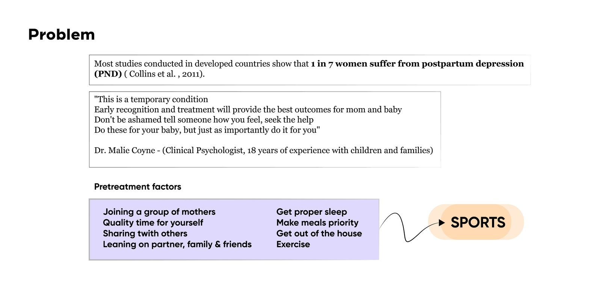

Herptile: Hamilelikte Güvenli Pilates için İstasyon ve Reformer
Hamilelik döneminde pilates yapmayı hem karada hem suda güvenli ve kontrollü hale getiren bir istasyon ve entegre reformer sistemi.
Hamilelikte spor, çoğu zaman erişilmez
Gelişmiş ülkelerde her 7 kadından biri doğum sonrası depresyon yaşıyor. Erken tanı, düzenli uyku, beslenme ve egzersiz bilinen koruyucu faktörler; ama hamilelikte güvenli, denetimli bir spor ortamına erişim çoğu kadın için zor: bilgi eksikliği, güven eksikliği ve uygun tesis azlığı.

Tek kullanıcı değil, bir paydaş ekosistemi
Çözüm tek bir ürünle sınırlı kalamazdı. Hamile kadının etrafındaki kurumsal paydaşlar haritalandı: doktor, özel eğitmen, aile çevresi, spor kulüpleri, belediyeler, Sağlık ile Gençlik ve Spor Bakanlıkları. Bu harita, ürünün bir hizmet sistemi içinde nasıl konumlanacağını netleştirdi.

Neyin doğru olduğuna nasıl karar verdik
| Kriter | Gereksinim |
|---|---|
| Güvenlik | Hareket aralığı ve direnç, hamileliğe uygun ve kontrollü olmalı |
| Çift ortam kullanımı | Hem karada hem suda (havuz kenarında) kullanılabilmeli |
| Alan verimliliği | Katlanabilir, paylaşımlı tesislerde az yer kaplamalı |
| Dijital rehberlik | Egzersiz talimatları uygulama üzerinden takip edilebilmeli |
| Kurumsal erişim | Belediye ve bakanlık iş birlikleriyle uygun fiyatlı sunulabilmeli |
Ürün değil, uçtan uca bir hizmet
Konsept, doktor önerisinden profil oluşturma ve tesis seçimine, oradan telefonla yönlendirilen reformer seanslarına ve isteğe bağlı havuz seansına uzanan uçtan uca bir yolculuk olarak kuruldu. Yolculuk haritası, kullanıcının duygu durumunu endişeli keşiften memnun düzenli kullanıma kadar izleyerek hizmetin nerede güven inşa etmesi gerektiğini gösterdi.

Ölçülü ilk formlar
İlk eskizler, reformer yatağının ve katlanabilir ayak mekanizmasının temel ölçülerini (400 ve 450 mm) belirledi. Üstten, önden ve yandan görünüşler aynı eskiz setinde birlikte geliştirildi.

Kayar platform mekanizması
Reformerin kalbi, kablo ve yay sistemiyle hareket eden kayar bir platform. Patlamış görünüm, döşemeli üst plakanın alt çerçeveye nasıl bağlandığını ve hareketin nereden kısıtlandığını gösteriyor.

Sac büküm ile tanımlanan gövde
İstasyonun gövdesi 3 mm sac büküm yöntemiyle üretilecek şekilde tasarlandı. Ortografik çizimler (430, 620, 630 ve 340 mm) ile birlikte 1:5 ölçekte teknik olarak tanımlandı.

Katlanabilirlik, üretim yöntemini şekillendirdi
Sac büküm, hem üçgen ayak yapısının tek parça büküm ile üretilmesine hem de gövdenin paylaşımlı tesislerde kolayca katlanıp saklanmasına imkan verdi. Bu, malzeme seçiminin sadece maliyet değil, tesis alanı kısıtı gibi hizmet düzeyi gereksinimlerinden de etkilendiği bir karardı.
Genel ölçülerden mekanizma detayına
İlk eskizler yatağın genel ölçülerini belirledi, sonraki aşamada kayar platformun kablo ve yay mekanizması detaylandırıldı. Gövde formu, katlanabilirlik ve sac büküm üretim kısıtına göre yeniden şekillendirildi.
Sonuç

Fiziksel ürünü hizmet katmanıyla birlikte tasarlamak
Bu proje, tek bir nesneyi değil, doktor önerisinden kurumsal iş birliklerine uzanan bir sistemi tasarlama alıştırmasıydı. Sac büküm gövde tasarımı ile uygulama üzerinden yürüyen kullanıcı yolculuğunun yan yana durması, ürün ve hizmet tasarımının birlikte düşünülebildiğini gösteriyor.